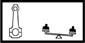

CONNECTING ROD ASSEMBLY
- Path
- Technical Data > Manufacturing data > 10 ENGINE > 1028 PISTONS AND CONNECTING RODS > CONNECTING ROD ASSEMBLY
- Kind
- technical data / specifications
- Applies to
- all engines; all production periods
- Interactive page
- https://sloeber94.github.io/elrnDB-fPnd/en/#/2751253
Applies to: all engines; all production periods
Big end diameter (mm) | Validity |  | ||
|---|---|---|---|---|
45.128 ÷ 45.138 | 1.2 8v | |||
Small end diameter (mm) | Validity | |||
17.939 ÷ 17.956 | 1.2 8v | |||
Applies to: all engines; all production periods
Big end diameter (mm) | Validity | | ||
|---|---|---|---|---|
45.734 ÷ 45.744 | 1.3 JTD | |||
Connecting rod weight difference (g) | Validity |  | ||
± | 1.3 JTD | |||
Weight difference (g) | Validity | |||
± 3 | 1.1 | |||